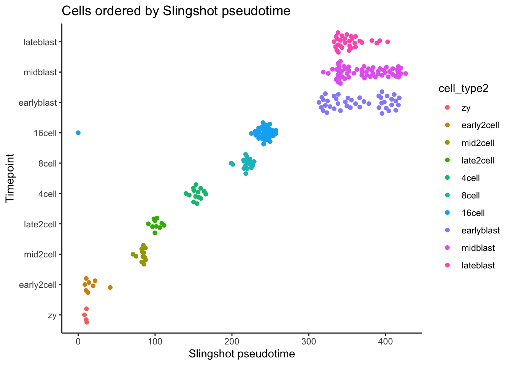

Trajectory analysis
Material
Exercises
Load the following packages:
Trajectory analysis using Slingshot
This part uses the
Dengdataset
First, download the dataset from github within your Terminal tab as on Day 1:

Type the following commands within the Terminal tab:
cd course_data/
wget https://github.com/hemberg-lab/nrg-paper-figures/raw/master/deng-reads.rdsThen, within R, import the rds file. the ‘Deng’ dataset is an object of class SingleCellExperiment.
deng_SCE <- readRDS("course_data/deng-reads.rds")Perform the first steps of the analysis. The deng_SCE object contains cells that were isolated at different stages of mouse embryogenesis, from the zygote stage to the late blastula.
The levels of the cell type are in alphabetical order. We now change the level order for plotting in developmental order:
We can run a PCA directly on the object of class SingleCellExperiment with the function runPCA:
deng_SCE <- scater::runPCA(deng_SCE, ncomponents = 50)Use the reducedDim function to access the PCA and store the results.
pca <- SingleCellExperiment::reducedDim(deng_SCE, "PCA")Describe how the PCA is stored in a matrix. Why does it have this structure?
head(pca) PC1 PC2 PC3 PC4 PC5 PC6
16cell 24.79868 62.20826 8.035201 -2.07391816 2.1297390 14.0930954
16cell.1 28.77121 50.35974 13.607012 0.08664449 0.9454185 3.5987880
16cell.2 26.67901 61.03875 7.239352 -6.60967794 -1.0775002 11.8876579
16cell.3 29.01151 56.03620 6.433057 2.85332708 -4.2885083 -0.1488504
16cell.4 26.38026 58.09265 4.671850 7.99519397 9.8077416 2.0570042
16cell.5 24.90566 60.77897 5.632497 -3.80156587 9.8835527 11.9028394
PC7 PC8 PC9 PC10 PC11 PC12
16cell 2.4645020 1.6350660 7.202260 9.862212 10.660702 0.6401721
16cell.1 2.1726663 -3.3481641 8.967394 6.664942 14.493227 11.7471565
16cell.2 -7.9007309 0.3368756 6.032645 5.295515 15.384993 4.2930696
16cell.3 -4.3727592 -1.1582470 1.520145 -8.789699 19.386866 -0.4999047
16cell.4 -0.6031572 -3.6743278 5.793753 10.823787 7.613724 4.7288640
16cell.5 -4.3269009 3.8968881 11.805221 9.798854 11.016137 19.1535086
PC13 PC14 PC15 PC16 PC17 PC18
16cell -5.716841 6.544614 -6.652210 3.458346 4.499013 11.360753
16cell.1 13.284708 -4.206404 -8.721043 7.926277 0.703508 5.418131
16cell.2 9.633173 1.672498 -9.609001 9.302794 10.219743 5.763834
16cell.3 14.177687 -8.509097 -6.978210 -10.771078 6.188808 -6.504081
16cell.4 3.106382 -4.078414 -10.739979 12.032452 6.239499 -2.331292
16cell.5 9.544362 -2.255400 -8.614958 2.832196 1.798584 -2.321082
PC19 PC20 PC21 PC22 PC23 PC24
16cell -2.2617345 2.456274 11.227414 1.7122827 -8.418641 -4.254968
16cell.1 11.8613891 -4.069530 9.320831 0.5802347 -11.878096 6.412425
16cell.2 3.3460356 -4.165813 2.031473 -2.1106373 -1.762218 1.135134
16cell.3 0.6042649 -6.008176 9.982856 9.4888653 2.822138 -12.871921
16cell.4 -3.9402029 0.298227 10.773722 -0.6374236 4.730329 -4.670391
16cell.5 2.0280791 -5.050525 -3.252243 -7.1527175 -9.923140 1.791511
PC25 PC26 PC27 PC28 PC29 PC30
16cell 4.049629 4.133374 -0.6235391 3.381254 -13.94917609 -8.217824
16cell.1 8.052083 8.334263 -0.5815629 -4.592214 -1.32417854 5.266909
16cell.2 2.326133 3.775858 -2.3388745 6.947394 -0.08121559 -2.942813
16cell.3 5.860750 1.869659 7.0402429 -5.092207 2.53575943 -18.529304
16cell.4 4.291113 13.005331 3.2802102 -4.606226 3.52531994 -3.599833
16cell.5 -4.708265 5.717693 1.1023767 -9.761377 4.57312078 -12.138646
PC31 PC32 PC33 PC34 PC35 PC36
16cell -6.897320 5.675943 -8.6076039 3.713348 0.9099737 4.7467546
16cell.1 -4.538307 -9.166969 9.4525575 8.848231 2.0782319 7.4318993
16cell.2 3.082470 2.207176 -0.5365986 3.895378 -7.4493361 0.7465149
16cell.3 1.680117 3.839556 13.3156066 6.257479 4.1112596 0.2780589
16cell.4 -13.314741 1.453554 -0.1334034 -2.941487 0.8162660 -2.9940693
16cell.5 -4.608498 12.180530 -5.8667454 -6.645273 -1.0224859 0.8960299
PC37 PC38 PC39 PC40 PC41 PC42
16cell -9.063470 -5.2765051 1.1758453 -9.474215 3.559391 -4.7781174
16cell.1 -6.217009 1.0216459 0.5798035 -21.705585 -3.570104 2.3279923
16cell.2 -6.227582 3.0863112 8.6153521 1.401230 2.266017 0.8150665
16cell.3 -8.411600 3.7169411 -0.7050601 -2.959623 -3.123082 1.0916370
16cell.4 2.871774 -4.2664023 -7.4894594 8.207422 4.223035 -1.4763577
16cell.5 10.169730 0.3923632 -9.3346900 -8.114487 11.186021 -4.5635674
PC43 PC44 PC45 PC46 PC47 PC48
16cell 7.92280920 8.558202 7.058962 3.058209 -0.5723866 4.674964
16cell.1 -5.60067538 -8.717056 -6.480960 8.554813 -13.1868736 3.397933
16cell.2 -5.25328812 5.803788 2.726822 1.241769 7.4824415 -4.088457
16cell.3 0.05135523 2.181424 2.404780 8.691231 8.9700016 -3.713542
16cell.4 -1.55019720 -4.946841 0.520753 -3.068227 10.7801148 5.167662
16cell.5 9.98211745 8.759947 -3.727758 -9.064882 -1.7524456 -3.306614
PC49 PC50
16cell 2.936245 -3.6018020
16cell.1 3.420242 3.4912940
16cell.2 -4.446019 0.2314861
16cell.3 5.179606 -9.7145187
16cell.4 1.077786 -3.0533212
16cell.5 -5.019036 -0.9294612Add PCA data to the deng_SCE object.
deng_SCE$PC1 <- pca[, 1]
deng_SCE$PC2 <- pca[, 2]Plot PC biplot with cells colored by cell_type2. colData(deng_SCE) accesses the cell metadata DataFrame object for deng_SCE. Look at Figure 1A of the paper as a comparison to your PC biplot.
ggplot(as.data.frame(colData(deng_SCE)), aes(x = PC1, y = PC2, color = cell_type2)) +
geom_point(size=2, shape=20) +
theme_classic() +
xlab("PC1") + ylab("PC2") + ggtitle("PC biplot")
PCA is a simple approach and can be good to compare to more complex algorithms designed to capture differentiation processes. As a simple measure of pseudotime we can use the coordinates of PC1. Plot PC1 vs cell_type2.
deng_SCE$pseudotime_PC1 <- rank(deng_SCE$PC1) # rank cells by their PC1 scoreCreate a jitter plot
ggplot(as.data.frame(colData(deng_SCE)), aes(x = pseudotime_PC1, y = cell_type2,
colour = cell_type2)) +
ggbeeswarm::geom_quasirandom(groupOnX = FALSE) +
theme_classic() +
xlab("PC1") + ylab("Timepoint") +
ggtitle("Cells ordered by first principal component")
Read the Slingshot documentation (?slingshot::slingshot) and then run Slingshot below.
sce <- slingshot::slingshot(deng_SCE, reducedDim = 'PCA')No cluster labels provided. Continuing with one cluster.Given your understanding of the algorithm and the documentation, what is one major set of parameters we omitted here when running Slingshot?
We didn’t set the parameter clusterLabels
Here is a custom function to plot the PCA based on a slingshot object. Run it in the console to add it to your global environment:
PCAplot_slingshot <- function(sce, draw_lines = TRUE, variable = NULL, legend = FALSE, ...){
# set palette for factorial variables
palf <- colorRampPalette(RColorBrewer::brewer.pal(8, "Set2"))
# set palette for numeric variables
paln <- colorRampPalette(RColorBrewer::brewer.pal(9, "Blues"))
# extract pca from SingleCellExperiment object
pca <- SingleCellExperiment::reducedDims(sce)$PCA
if(is.null(variable)){
col <- "black"
}
if(is.character(variable)){
variable <- as.factor(variable)
}
if(is.factor(variable)){
colpal <- palf(length(levels(variable)))
colors <- colpal[variable]
}
if(is.numeric(variable)){
colpal <- paln(50)
colors <- colpal[cut(variable,breaks=50)]
}
# draw the plot
plot(pca, bg = colors, pch = 21)
# draw lines
if(draw_lines){
lines(slingshot::SlingshotDataSet(sce), lwd = 2, ... )
}
# add legend
if(legend & is.factor(variable)){
legend("bottomright", pt.bg = colpal,legend = levels(variable),pch=21)
}
}Have a look at the PCA with the slingshot pseudotime line:
PCAplot_slingshot(sce, variable = sce$slingPseudotime_1, draw_lines = TRUE)as(<dsCMatrix>, "dgCMatrix") is deprecated since Matrix 1.5-0; do as(., "generalMatrix") instead
Also have a look at pseudotime versus cell type:
ggplot(as.data.frame(colData(deng_SCE)), aes(x = sce$slingPseudotime_1,
y = cell_type2,
colour = cell_type2)) +
ggbeeswarm::geom_quasirandom(groupOnX = FALSE) +
theme_classic() +
xlab("Slingshot pseudotime") + ylab("Timepoint") +
ggtitle("Cells ordered by Slingshot pseudotime")
This already looks pretty good. Let’s see whether we can improve it. First we generate clusters by using Seurat:
gcdata <- Seurat::CreateSeuratObject(counts = SingleCellExperiment::counts(deng_SCE),
project = "slingshot")
gcdata <- Seurat::NormalizeData(object = gcdata,
normalization.method = "LogNormalize",
scale.factor = 10000)
gcdata <- Seurat::FindVariableFeatures(object = gcdata,
mean.function = ExpMean,
dispersion.function = LogVMR)
gcdata <- Seurat::ScaleData(object = gcdata,
do.center = T,
do.scale = F)
gcdata <- Seurat::RunPCA(object = gcdata,
pc.genes = gcdata@var.genes)
gcdata <- Seurat::FindNeighbors(gcdata,
reduction = "pca",
dims = 1:5)
# clustering with resolution of 0.6
gcdata <- Seurat::FindClusters(object = gcdata,
resolution = 0.6)Now we can add these clusters to the slingshot function:
deng_SCE$Seurat_clusters <- as.character(Idents(gcdata)) # go from factor to character
sce <- slingshot::slingshot(deng_SCE,
clusterLabels = 'Seurat_clusters',
reducedDim = 'PCA',
start.clus = "2")Check how the slingshot object has evolved
SlingshotDataSet(sce)as(<dsCMatrix>, "dgCMatrix") is deprecated since Matrix 1.5-0; do as(., "generalMatrix") insteadclass: SlingshotDataSet
Samples Dimensions
268 50
lineages: 2
Lineage1: 2 4 0 5 3
Lineage2: 2 4 1
curves: 2
Curve1: Length: 425.94 Samples: 234.63
Curve2: Length: 341 Samples: 132.38Plot PC1 versus PC2 colored by slingshot pseudotime:
PCAplot_slingshot(sce, variable = sce$slingPseudotime_2)
Plot Slingshot pseudotime vs cell stage.
ggplot(data.frame(cell_type2 = deng_SCE$cell_type2,
slingPseudotime_1 = sce$slingPseudotime_1),
aes(x = slingPseudotime_1, y = cell_type2,
colour = cell_type2)) +
ggbeeswarm::geom_quasirandom(groupOnX = FALSE) +
theme_classic() +
xlab("Slingshot pseudotime") + ylab("Timepoint") +
ggtitle("Cells ordered by Slingshot pseudotime")Warning: Removed 29 rows containing missing values (position_quasirandom).
ggplot(data.frame(cell_type2 = deng_SCE$cell_type2,
slingPseudotime_2 = sce$slingPseudotime_2),
aes(x = slingPseudotime_2, y = cell_type2,
colour = cell_type2)) +
ggbeeswarm::geom_quasirandom(groupOnX = FALSE) +
theme_classic() +
xlab("Slingshot pseudotime") + ylab("Timepoint") +
ggtitle("Cells ordered by Slingshot pseudotime")Warning: Removed 134 rows containing missing values (position_quasirandom).
Particularly the later stages, separation seems to improve. Since we have included the Seurat clustering, we can plot the PCA, with colors according to these clusters:
PCAplot_slingshot(sce,
variable = deng_SCE$Seurat_clusters,
type = 'lineages',
col = 'black',
legend = TRUE)
PCAplot_slingshot(sce,
variable = deng_SCE$cell_type2,
type = 'lineages',
col = 'black',
legend = TRUE)
Instead of providing an initial cluster, think of an end cluster that would fit this trajectory analysis and perform the slingshot analysis. Does slingshot find the initial cluster corresponding to the biological correct situation?
Clear your environment:
Trajectory analysis with monocle3
Currently it’s not possible to use the interactive part of monocole3 on the cloud server. Therefore, these exercises can only be performed locally.
This part showcases how you can use monocle3 to perform a trajectory analysis. First load the seu_int dataset:
seu_int <- readRDS("seu_day2-4.rds")Load the required package into your environment:
library(monocle3)Generate a monocle3 object (with class cell_data_set) from our Seurat object:
# get matrix and filter for minimum number of cells and features (the latter is a fix for backward compatibility)
mat_tmp <- seu_int@assays$RNA@counts
seu_tmp <- Seurat::CreateSeuratObject(mat_tmp, min.cells = 3,
min.features = 100)
feature_names <- as.data.frame(rownames(seu_tmp))
rownames(feature_names) <- rownames(seu_tmp)
colnames(feature_names) <- "gene_short_name"
seu_int_monocl <- monocle3::new_cell_data_set(seu_tmp@assays$RNA@counts,
cell_metadata = seu_int@meta.data,
gene_metadata = feature_names)We pre-process the newly created object. What does it involve? Check:
?preprocess_cdsPreprocess the dataset:
seu_int_monocl <- monocle3::preprocess_cds(seu_int_monocl)And check out the elbow plot:
monocle3::plot_pc_variance_explained(seu_int_monocl)Perform UMAP using the implementation in the monocle3 package and its default parameters:
seu_int_monocl <- monocle3::reduce_dimension(seu_int_monocl, reduction_method = "UMAP")Plot the monocle3 UMAP coloring cells according to the cluster ID ran with Seurat:
monocle3::plot_cells(seu_int_monocl,
color_cells_by = "integrated_snn_res.0.3",
cell_size = 1,
show_trajectory_graph = FALSE)
monocle3::plot_cells(seu_int_monocl, genes = "CD79A",
show_trajectory_graph = FALSE,
cell_size = 1)
Cluster cells using monocle3’s clustering function:
seu_int_monocl <- monocle3::cluster_cells(seu_int_monocl, resolution=0.00025)
monocle3::plot_cells(seu_int_monocl, label_cell_groups = F)
learn graph (i.e. identify trajectory) using monocle3 UMAP and clustering:
seu_int_monocl <- monocle3::learn_graph(seu_int_monocl)
monocle3::plot_cells(seu_int_monocl)Find the CD34+ B-cell cluster in the monocle UMAP. This cluster has a high expressession of CD79A and expresses CD34.
monocle3::plot_cells(seu_int_monocl, genes = c("CD79A", "CD34"),
show_trajectory_graph = FALSE,
cell_size = 0.7, group_label_size = 4)Returns:

The left part of cluster 7 has both a high expression of CD79A and CD34.
Select the “initial” cells in the B-cell cluster to calculate pseudotime. The initial cells in this case are the CD34+ B-cells we have just identified. A pop up window will open and you need to click on the “initial” cells (one node per trajectory), then click “Done”.
seu_int_monocl<-monocle3::order_cells(seu_int_monocl)#monocle3::plot_cells(seu_int_monocl,
color_cells_by = "pseudotime",
label_cell_groups=F,
label_leaves=F,
label_branch_points=FALSE,
graph_label_size=1.5, cell_size = 1)In order to find genes which expression is affected by pseudtime, we first have to isolate the B-cell cluster. Therefore, extract all cells in the B-cell cluster with the interactive choose_cells function:
seuB <- choose_cells(seu_int_monocl)Check whether you have selected the right cells:
plot_cells(seuB, show_trajectory_graph = FALSE, cell_size = 1)Now we can use the cells in this trajectory to test which genes are affected by the trajectory:
pr_test <- graph_test(seuB,
cores=4,
neighbor_graph = "principal_graph")
# order by test statistic
pr_test <- pr_test[order(pr_test$morans_test_statistic,
decreasing = TRUE),]
View(pr_test)There are some interesting genes in there, for example related to cell cycling (MKI67, CKS2), related to B-cell development (CD34, MS4A1) and immunoglobulins (IGLL1 and IGLL5). We can plot those in the UMAP:
goi <- c("CD34", "MS4A1", "IGLL1", "IGLL5",
"MKI67", "CKS2")
plot_cells(seuB, label_cell_groups=FALSE, genes = goi,
show_trajectory_graph=FALSE, cell_size = 1)
But also against pseudotime:
seuB@colData$monocle_cluster <- clusters(seuB)
plot_genes_in_pseudotime(subset(seuB,
rowData(seuB)$gene_short_name %in% goi),
min_expr=0.5, color_cells_by = "monocle_cluster")